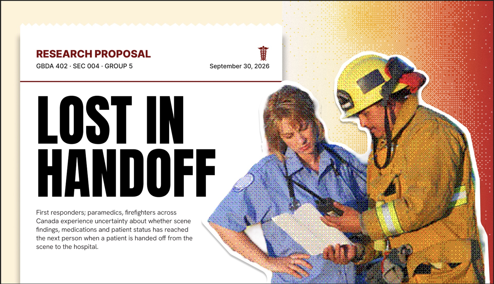
Problem pitch · Semifinal
The first responder who hears a patient’s story is the one nobody downstream gets to ask.
Henriëtta van Niekerk
with GBDA 402 Team 5: Zubi, Alita, Cindy, Chrisandra
One patient, one missing sentence
A young woman arrives on stroke protocol: confused, “previously healthy.” Full stroke workup, CT and all. It’s clear. Then her father arrives on his own. She drank every day. The likely cause was a withdrawal seizure.
Her doctor’s point: the system shouldn’t need safeguards to catch what better information would have prevented.
Who arrives by ambulance
The patients most likely to have a medication problem, and least able to tell you their history.
Hohl et al., validated Canadian ED decision rule
“It’s a broken telephone.”
Faith, ER nurse
Emergency physician interview, Oct 7, 2026 · ER nurse interview, Oct 21, 2026 · Hohl et al. (via our systems map)
The problem
Our argument: the story is complete at the scene, it’s lost on the way out, and it’s lost at a link nobody measures, so nobody pays to fix it.
Health Futures
Problem statement from our QVI application and GBDA 402 capstone, Fall 2026
The handoff chain
Reaches paramedics
??%
The link nobody has measured
“We give them this much information, the ambulance takes that … and then they give this information to the doctor.”
Augie, volunteer firefighter, Woolwich Township
Band thickness and dropped facts are illustrative. Measured loss exists only from paramedic to ER. 12 of 25 paramedics rate dispatch information 1–2 out of 5.
Measured one link downstream: paramedic to ER
72.9%
of what paramedics say at a trauma handover is received and written into the hospital chart.
Carter et al., 2009, video-recorded handovers
Picture 100 facts said out loud. 27 never reach the chart.
10 of 28
times low blood pressure was said, it was received. Glasgow Coma Scale: 10 of 22. Pulse: 13 of 49.
Carter, Davis, Evans and Cone, Prehospital Emergency Care 13(3), 2009 · 100 dots = 100 facts · grey = never charted
Fire → paramedic
The closest study looks at ambulance-to-specialist handover in Scotland. And both EMS and ER staff rate their own handoffs far better than trained observers do (Panchal et al., 1,091 transfers), so the people closest to the gap are the last to see it.
Lost in Handoff systems map: the fire → paramedic link is the identified gap
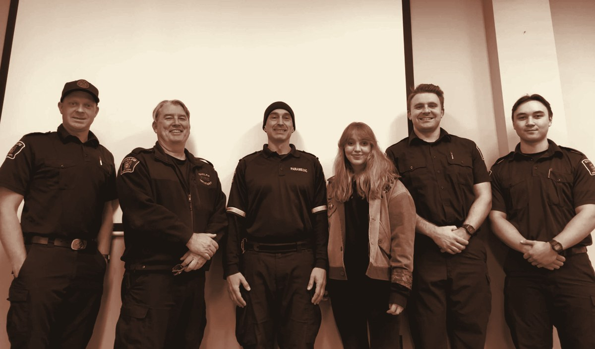
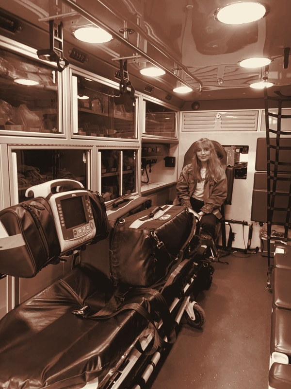
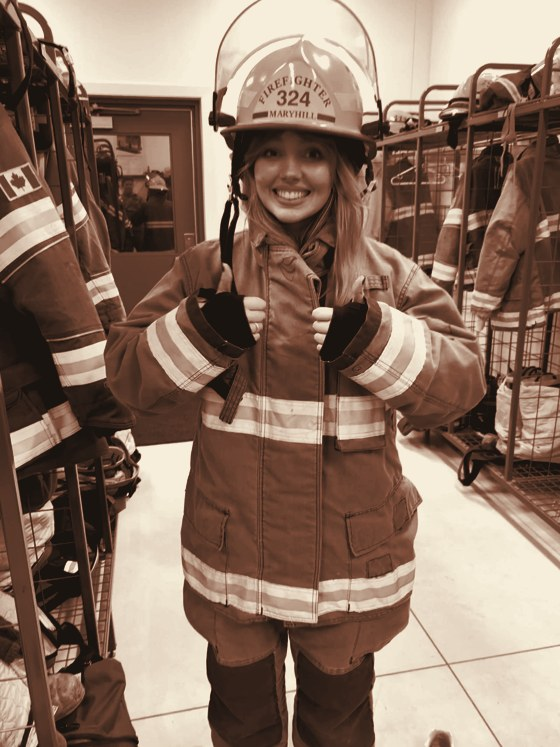
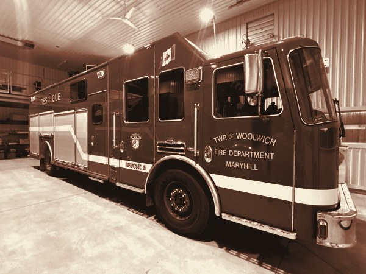
Fieldwork · Sep 30 to Nov 2, 2026
0
interview and listening sessions, 18 people
0
firefighters and officers in Woolwich and Cambridge
0
a paramedic, 2 ER physicians, 3 ER nurses
0
survey responses: 25 paramedics, 4 ER nurses
Figure. Station visits: a Cambridge Fire crew, an ambulance, bunker gear, Maryhill’s rescue truck.
Capstone Network Notes · Scene-to-Hospital Handoff Survey, Oct 2026
Steps 3 and 4 · Arrival and first contact
10–30
minutes
that fire can be the only crew with the patient, depending on the city
57%
of Cambridge Fire’s 2022 calls were medical
41%
of urban Ontario fire calls are medical
What the captain collects before paramedics arrive
Family and witnesses
Medical history
Medications
Allergies
What led up to it
Health card and ID
Who’s in the room
Vitals
“You think of the things that you do every day and amp that up 20 fold.”
Mr. Gallagher, Maryhill, on what he calls controlled chaos
Fire crew interviews, Sep–Nov 2026 · City of Cambridge Fire Department annual report (2022) · AMEMSO (2011)
“The doctor doesn’t know what it looked like when you arrived there.”
Firefighter, Maryhill
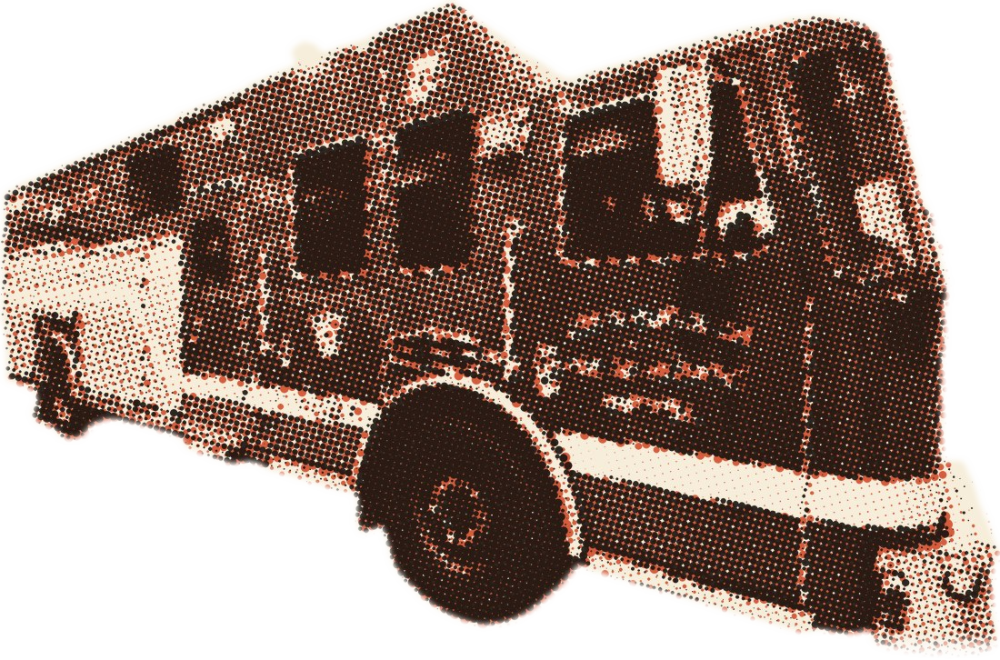
Figure. Maryhill’s rescue truck, Woolwich Township Fire.
~3 in 4
ER physicians say vital information is at least sometimes missing at handover
~1 in 4
EMS providers feel ER staff pay enough attention to their handoff
Maryhill listening session, Oct 2026 · survey data cited in Goldberg et al., 2017
Step 5 · Gloves and paper
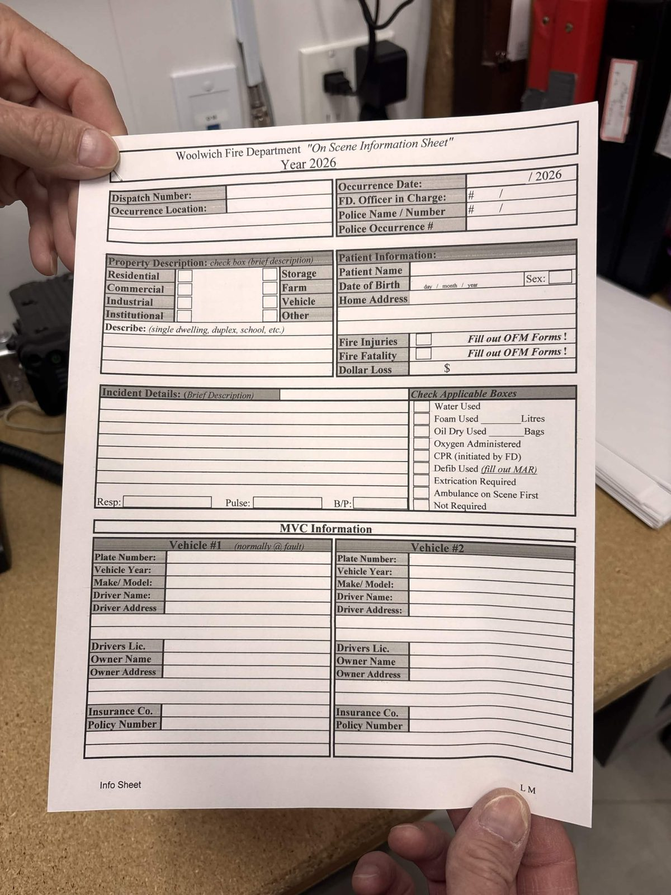
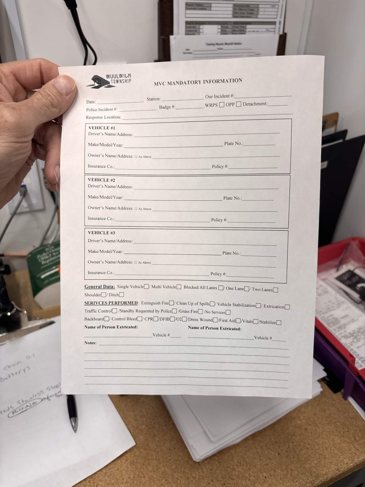
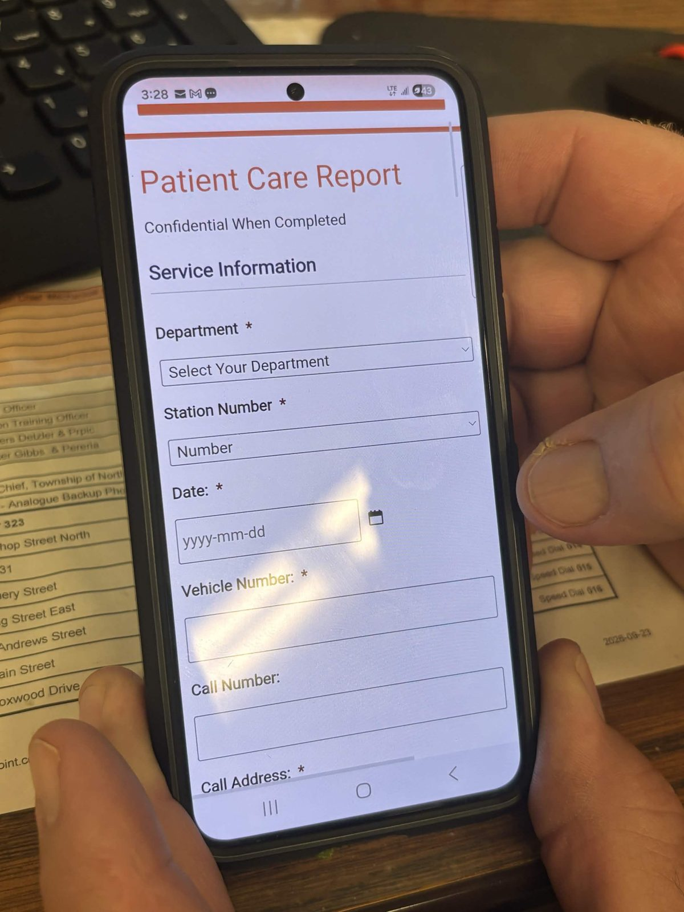
Paper. Rewritten later from memory.
A second form for the same call.
Typed in after the call. Never sent to paramedics.
The drug count, how many doses of Narcan or epi, lives in a head or on a glove.
Paramedics elsewhere do it too: gloves and scrap paper are “easily lost” (Wilson et al., UK), and memory is the most common way handover information is carried (Critcomms, Scotland, n = 190).
Station visits and documentation walkthroughs, Woolwich and Cambridge, Oct 2026
Step 6 · The handoff · survey of 25 paramedics, 4 ER nurses
~70 s
median EMS handoff (66–76 s): everything fire learned, said while the patient is moved
3 / 4
ER nurses name medical history as what’s missing or wrong when the patient arrives
7 / 25
ask the patient everything again themselves, even after fire’s report
Scene-to-Hospital Handoff Survey, Oct 2026, N = 29. Ratings, not a clinical audit.
When a sentence can’t carry it
After a motorcycle crash, Maryhill crews send the rider’s helmet to the hospital with the patient. When words can’t carry the scene, fire hands over objects.
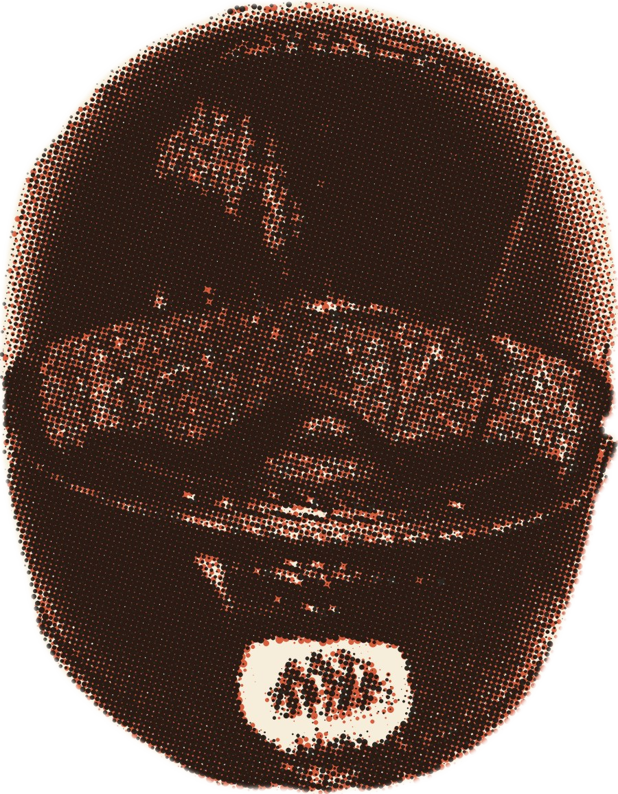
Figure. A helmet after a frontal crash: the scrapes show where it hit. Photo: Todd Vierling, public domain.
Volunteer firefighter listening session, Maryhill, Oct 2026
What a picture tells the ER
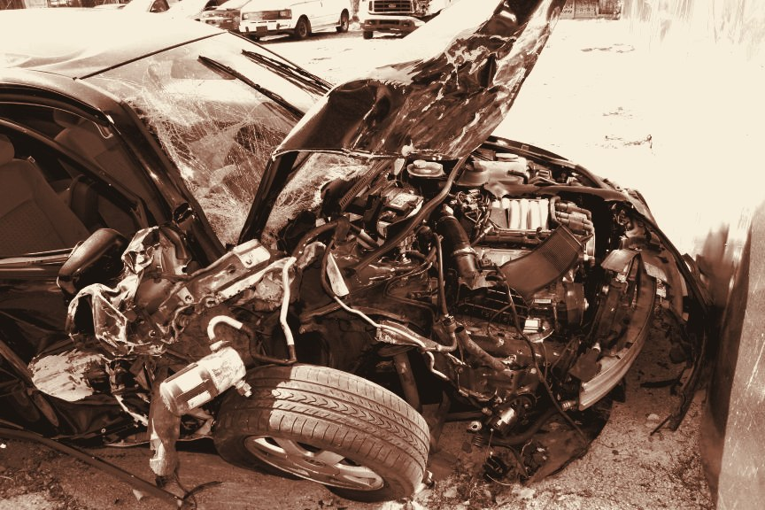
Figure. A car after a head-on crash. Photo: Guy Cobb, public domain.
ER physician · Waterloo
A crash patient was being treated as a cardiac arrest. The paramedic’s photos showed only minor damage, not enough to explain how sick the patient was. That sent the team looking for another cause: an asthma attack that caused the crash. The photos changed the treatment.
ER physician
Speed, seatbelt, airbags, ejection: mechanism tells the team what to look for before imaging. Police photos hold it, with no path to the ER.
Paramedic · Guelph, and Breslau Fire
Scene photos should travel with the handoff. A photo of the wreck can move a crash patient up triage.
Precedent: Seattle Fire already shares scene photos with Medic One physicians (NFPA best practice). In Ontario there’s no path at all.
Emergency physician interviews, Oct 7 and Oct 15, 2026 · paramedic interview, Oct 2026 · City of Seattle, Emergency Scene Cameras, 2018
Step 8 · Paperwork, hours later
1
Ontario Fire Marshal call report
Required for every call. The call number doesn’t carry over.
2
Township records system
Same names and plates, copied in again.
3
Training system
Its own login, and the same details again.
“It would be nice if a lot of the stuff carried over … I have to plug my name in every time … This is how archaic this is.”
Acting captain, Cambridge Fire, walking us through all three
Cambridge Fire documentation walkthrough, Nov 2, 2026
Step 9 · Silence
“We don’t get a lot of feedback. We don’t know how the person is. We might know where they went. But we don’t know.”
Tom, deputy chief, Woolwich Township
Fire learns how a call ended only if a crew member knows the patient, or someone in the community tells them. No formal channel exists.
A loop that never closes can’t be corrected.
Listening sessions, Maryhill and Cambridge, Oct 2026
Root causes, from our systems map
Fire
Municipal · MFIPPA
Paramedics
Region + province · PHIPA
Hospital
Province · PHIPA
Notes on gloves and paper. Volunteer crews form on the fly.
ePCR on a Toughbook. Prehos, an Ontario ePCR, collapsed in 2026 with a month’s notice for ~22 services.
Takes no electronic feed from either. Records arrive by fax.
Two privacy laws
No shared record
The belief underneath
Every agency protects its own liability first. Continuity of care becomes someone else’s problem when the patient leaves its hands.
Lost in Handoff systems map · Armstrong, Village Report (Jun 20, 2026) · Kirkham, Canadian Healthcare Technology (Jun 24, 2026)
Loop R1 · reinforcing · from our systems map
Paper, gloves and memory get treated as good enough because they mostly get the allergy across. So nobody funds a shared tool or shared training, and crews keep relying on paper, gloves and memory.
“It’s always been this way.”
Firefighter, Breslau
R
reinforcing
1Paper, gloves and memory mostly work
2No pressure to fund a shared tool
3No shared handoff training
4Crews fall back on what they know
Lost in Handoff systems map, loop R1 · Breslau and Maryhill listening sessions, Oct 2026
Who gets hurt
53.6%
of admitted patients have an unintended medication discrepancy, most often a regular medication left out. Over a third of those could cause moderate to severe harm.
>1 in 4
hospital prescribing errors trace to incomplete medication histories
1 in 9
Canadian ER visits are medication-related; ~70% preventable
The pill bottle fire saw on the kitchen counter
Cornish et al., 2005 · Tam et al., CMAJ 2005 · Zed, Hohl et al., CMAJ 2008
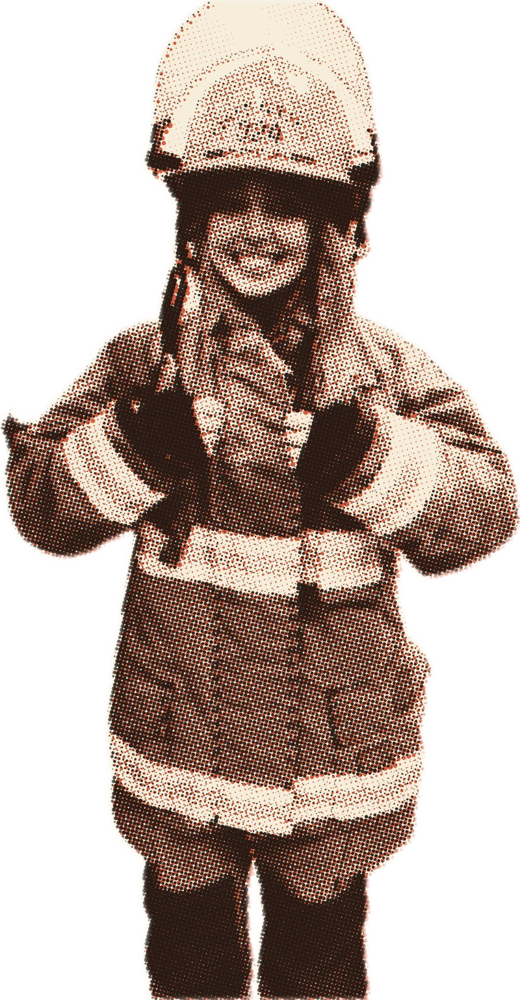
Figure. Henriëtta in borrowed bunker gear on a station visit.
Who pays · 1 of 3
Municipal budget · first on scene, the fullest account
$9.0M
a year across Canada, and a floor: only what we could count and source. 41.7M people × 21 fire medical calls per 1,000 = 886k calls.
Re-typing the same call
886k calls × (6.8 min re-entry + 35% given care × 11.3 min report) × $53/hr
$8.3M
Harm while fire has the patient
886k × 35% × 0.38% adverse events × 21% tied to missing info × $2,710
$0.6M
Not in this number
Bold = measured or published · orange = our assumption · inputs at their medians over 200,000 runs
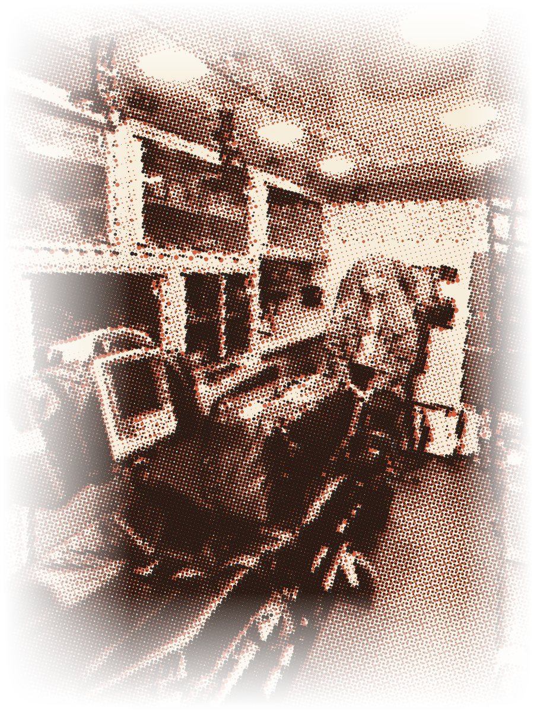
Who pays · 2 of 3
Regional + provincial budget, split about 50/50
$44M
a year across Canada. Most of it is patients who get worse in their care. 41.7M people × 64 ambulance patients per 1,000 = 2.65M patients.
Harm while they have the patient
2.65M patients × 2.2% adverse events × 21% tied to missing info × $2,710
$31M
Time
2.65M × 50% arrive incomplete × 2.3 min at handover × $195/hr = $9.9M
+ re-asking on scene $1.1M + hospital callbacks $1.7M
$12.7M
Not in this number
Bold = measured or published · orange = our assumption · inputs at their medians over 200,000 runs
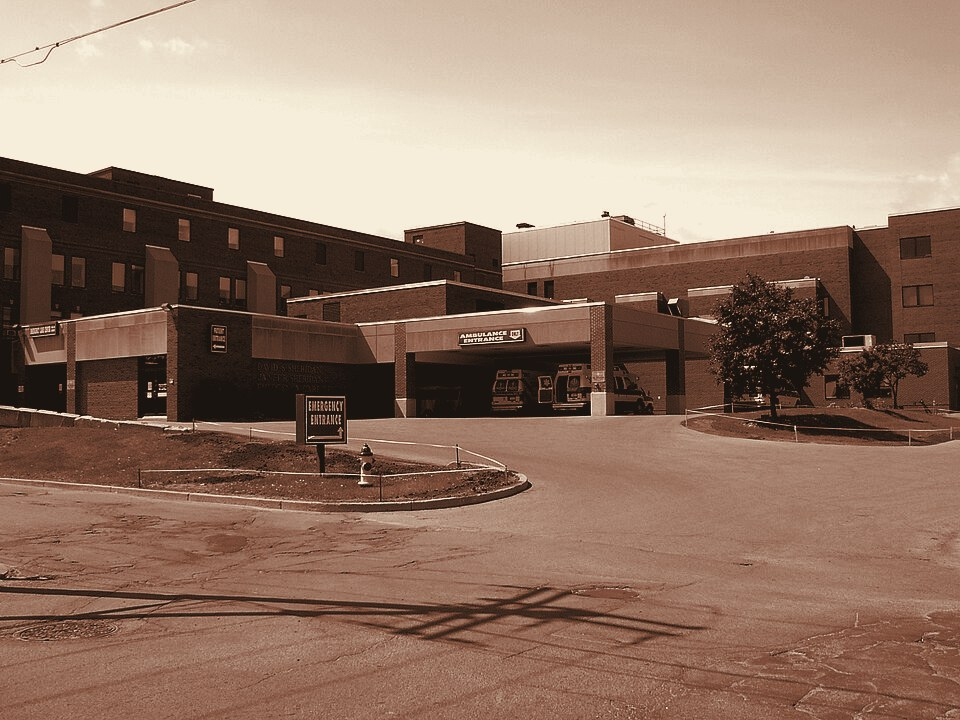
Figure. An ER ambulance entrance. Photo: Wikimedia Commons, public domain.
74%
of the whole cost lands here, on the service that sees the patient last.
Who pays · 3 of 3
Provincial budget · furthest from the scene
$151M
a year across Canada, for a story that was complete at the scene.
Medication and treatment harm
2.65M × (0.33% × $9,270 drug harm + 0.14% × $6,780 delayed treatment)
$107M
Nurse, physician and clerk time
1.3M incomplete × (5.5 min × $72/hr nurse + 3.3 min × $203/hr MD)
+ 2.65M faxed reports × 4.5 min × $31/hr clerk
$29.8M
Extra tests
2.65M × 1.4% × $304, from a CT to a full workup
$11.3M
Records sent to the wrong hospital
2.65M × 0.073% (Hamilton’s rate) × $214
$0.4M
Bold = measured or published · orange = our assumption · inputs at their medians over 200,000 runs
All three together
$209M
a year, most likely. 80% of model runs land between $161M and $269M. Ontario alone: about $88M.
643k hrs
of staff time a year, about 348 full-time jobs
Fire $9M
Paramedics $44M
Hospitals $151M
The people who capture the story pay to capture it. The people who pay for losing it never see where it was lost.
Our model: 200,000 runs over sourced ranges (formulas on the three cost slides)
History
2005
Half of admitted patients have a medication discrepancy
2009
Only 72.9% of handover information reaches the chart
2018
Coroner’s inquest: a shared radio channel, not a shared record
2022
ESO buys Interdev; paramedic records consolidate
2024
Privacy penalties begin: up to $500,000
2025
Paramedic reports must hold up as evidence
2026
Prehos collapses; ~22 services scramble
Every fix so far improved one agency’s record or the radio between them. None created a record that crosses custody.
Why now
After Prehos collapsed, about 22 paramedic services are choosing new records systems right now. The next record gets built either way.
Cornish 2005 · Carter 2009 · Ontario coroner’s inquest 2018 · ESO 2022 · PHIPA · Documentation Standards v4.0 · Armstrong 2026 · Kirkham 2026
Failure analysis
Prehos ePCR
Served one custodian’s workflow. Collapsed in 2026, leaving ~22 services starting over.
Single-agency tools
ImageTrend Elite Rescue, Medic Clipboard: built for one agency’s record. What fire learns never enters them.
Paper, gloves and memory
Easily lost, can’t be audited, and exposed under Documentation Standards v4.0.
Radio interoperability
The 2018 inquest’s fix. Better talk between agencies at dispatch, still no shared patient record.
A med list in the fridge
Nobody kept the lists updated. “You could get false information.”
A newer app, a work order
Each added a step to the call. Neither became habit.
Tools that add a step get dropped. Tools that remove one stay.
Armstrong 2026 · ImageTrend · Digital EMS Solutions · Fitzpatrick et al., 2018 · Carter 2009 · Ontario coroner’s inquest 2018 · fire crew interviews
What a good solution needs
1
Cross custody lawfully
each organization sets its own retention
2
Responder reviews first
nothing is shared unreviewed
3
Fit a 70-second handoff
gloves on, zero added time on scene
4
Each team gets what it needs
a paramedic and an ER physician need different things
5
Work with no signal
and log who saw what
6
Collect the minimum
no diagnosis, affordable for a volunteer hall
7
Be testable
count what reaches the next person
Constraints set by responders in our interviews and survey · QVI failure analysis
Lost in Handoff
The problem
The first responder who hears the patient’s story is the one nobody downstream gets to ask.
The mistake
Everyone measures the handoff at the hospital door. The story is lost one link earlier, at the scene, where nobody measures it and nobody pays for it.
Why now
Paramedic services are rebuilding their records after Prehos. The next system gets built either way.
What the $7,500 is for
With the stations already working with us: Woolwich · Cambridge · Guelph, and more across Ontario soon.
$2,500
Measure the first link
Scenario sessions with partner crews, counting what actually reaches the paramedic.
$2,000
Build a cheap test
A low-cost “will this work” capture test, run with partner stations.
$2,000
Map the legal path
A privacy-law review of how a fire record can lawfully reach paramedics (MFIPPA to PHIPA), and a draft sharing agreement partners can sign.
$1,000
Bridge the services
One joint fire, paramedic and ER session to agree what must travel, and the findings shared back.
L
The first measured share of fire’s account that reaches the paramedic: the number nobody has, so the people who pay can see where the story is lost.
Lost in Handoff
Henriëtta van Niekerk · henliz.github.io/lost-in-handoff
Complete at the scene
Fire is first, and holds the fullest account anyone will ever have.
Lost at the first link
Only 72.9% reaches the chart, and the link before it has never been measured.
Paid for downstream
About $209M a year in Canada, three-quarters of it at hospitals.
Appendix · sources 1 of 2
Appendix · sources 2 of 2